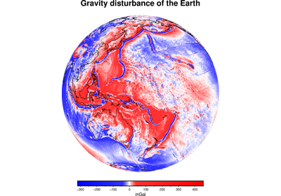
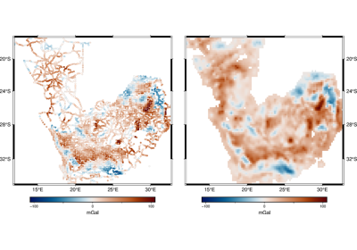
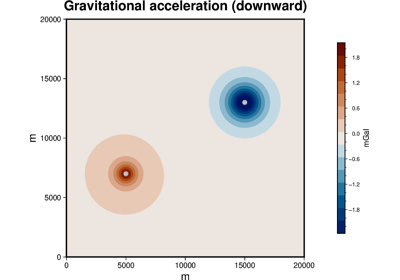
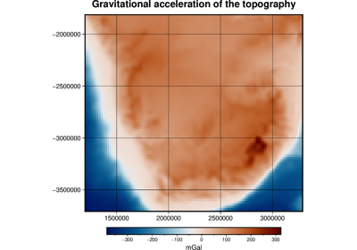
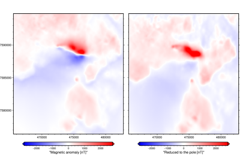
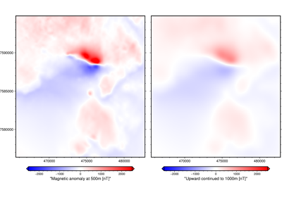

Gallery#
This gallery contains a selection examples of what Harmonica can do.

Gravity Disturbances


Equivalent Sources#



Gridding in spherical coordinates
Gridding in spherical coordinates
Forward Modeling#

Point Masses in Cartesian Coordinates
Point Masses in Cartesian Coordinates


Gravitational effect of topography
Gravitational effect of topography


Grid transformations#

Reduction to the pole of a magnetic anomaly grid
Reduction to the pole of a magnetic anomaly grid



Upward continuation of a regular grid
Upward continuation of a regular grid